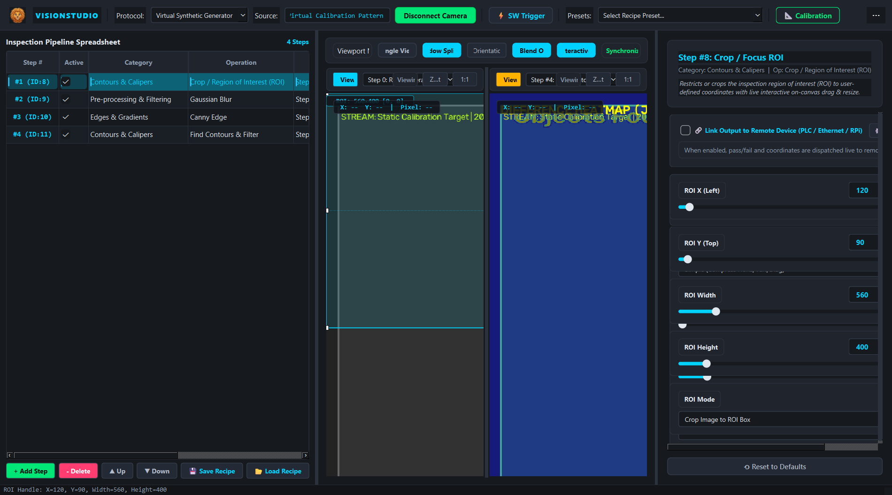

Spreadsheet DAG Execution Engine
Deep dive into cell coordinates, Directed Acyclic Graph dependency sequencing, formula parsing, conditional branching, and real-time execution benchmarking.
Directed Acyclic Graph (DAG) Execution

Topological Sorting Algorithm
When an inspection job compiles, VisionStudio constructs an adjacency list representing all cell interdependencies. A depth-first topological search orders the cells so that every parent cell computes before its children:
| Cell | Label | Formula | Depends On | Role |
|---|---|---|---|---|
A0 |
Camera Image | =AcquireImage() |
None | Root camera buffer capture |
B2 |
IC Alignment | =PatMax(A0) |
A0 |
Locates part centroid and rotation angle |
C3 |
Hole Inspection | =FindBlobs(A0, threshold=120) |
A0 |
Detects presence/absence of drilled holes |
D4 |
Pin Diameter | =FindCircle(A0) |
A0 |
Measures radial caliper circle |
E5 |
Quality Gate | =If(B2.Score >= 60.0, "PASS", "FAIL") |
B2 |
Evaluates pass/fail status and trips PLC bit |
Cell Attribute Referencing Syntax
Tools output structured result objects. Downstream cells reference specific attributes using dot notation:
B2.Score— Matching confidence percentage (0.0 to 100.0%).B2.X&B2.Y— Subpixel centroid coordinates.B2.Angle— Rotational orientation in degrees (-180° to +180°).C3.Count— Total count of detected foreground blobs.D4.Radius— Fitted circle radius in pixels.
Industrial Pipeline Manager Execution Graph
In addition to cell formulas, VisionStudio provides a high-throughput Pipeline Engine designed for deterministic factory inspection lines:
Branching Input Sources
Each pipeline step can independently select its input frame: either the raw camera feed (Step 0) or the processed output of any upstream step. This enables branching pipelines (e.g. branch A for edge detection, branch B for OCR).
Real-Time Buffer Caching
Intermediate step outputs are cached in high-speed memory buffers. If a step is temporarily bypassed or downstream parameters change, intermediate buffers are reused without re-executing unchanged upstream filters.
Interactive Step Reordering & Bypass
Use the ▲ Move Up, ▼ Move Down, and Active toggle controls in the pipeline table to reorder or bypass steps on the fly without interrupting the live 60 FPS video stream.
JSON Recipe Persistence
Full pipeline recipes (operations, parameters, branching inputs, and remote device links) export to human-readable JSON files, facilitating rapid batch recipe changeover across manufacturing cells.
Dual Split Viewport & Real-Time Difference Heatmap
Operators can split the center viewport into Viewport A (Primary) and Viewport B (Comparison) to inspect intermediate steps side-by-side with synchronized pan and zoom:

Spreadsheet Output Column & Remote Signal Configuration
The pipeline spreadsheet features a dedicated Output / Signal column (Column #5). This column displays the evaluated inspection result in real-time and specifies what data or discrete signal is transmitted to remote industrial fieldbuses (Delta PLCs, Siemens S7, Beckhoff ADS, Ethernet TCP/UDP, and Raspberry Pi GPIO).
| Column # | Header Title | Editable Controls | Industrial Function |
|---|---|---|---|
0 |
Step # | Read-only | Unique step execution identifier (0 = Raw Camera Frame). |
1 |
Active | Checkbox toggle | Enable step execution or bypass (pass-through upstream frame). |
2 |
Category | Context Menu | Vision algorithm category (YOLO26, Contours, OCR, etc.). |
3 |
Operation | Double-click edit | Concrete vision operation name. |
4 |
Input Source | Dropdown selector | Branching source step selection (e.g. Step 0 or Step 2). |
5 |
Output / Signal | Click / Double-click | Configures exact measurement metric, YOLO object class trigger, or custom signal code sent to remote devices. |
6 |
Latency | Read-only | Execution cycle duration in milliseconds (ms). |
7 |
Status | Read-only badge | Pass/Fail operational status or error diagnostic. |
Universal Signal Modes for All Functions
Clicking on any cell in the Output / Signal column opens the Remote Output & Signal Configuration Dialog. Operators can configure custom signals across 9 universal modes:
1. Pass / Fail Boolean Logic
Default industrial mode. Dispatches Signal 1 (M0 coil / GPIO High) on Pass and Signal 0 on Fail.
2. Calibrated Measurement Value
Select which measurement metric (Length, Width, Area, Diameter, Deviation) is streamed as an IEEE-754 32-bit float to PLC D-registers (D108) or Ethernet JSON.
3. YOLO Specific Object Class
Trigger a specific signal ID only when a designated object class is detected (e.g. Signal #101 when 'bottle' is present; ignores other classes).
4. YOLO Combined (All Objects)
Generates a combined trigger whenever any object meets the minimum count threshold, streaming total detected object count.
5. YOLO Multi-Class Signal Map
Configures a lookup table mapping each detected object class to a different discrete signal code (e.g. Person = 1, Bottle = 2, Forklift = 3).
6. Quantity Count & Blobs
Streams the quantity of detected contours, defects, or parts to automated sorting gates and batch counters.
7. Centroid Coordinates (X, Y)
Dispatches part coordinates to Delta/Siemens PLC registers for pick-and-place robot arms and automated guidance.
8. OCR & Decoded Text Strings
Transmits recognized serial numbers, alphanumeric lot codes, and barcode strings over Ethernet TCP/UDP.
🔗 Enable Remote Dispatch is active for a step,
the spreadsheet Output column displays a bright cyan 📡 satellite badge,
confirming live transmission to configured factory fieldbuses.